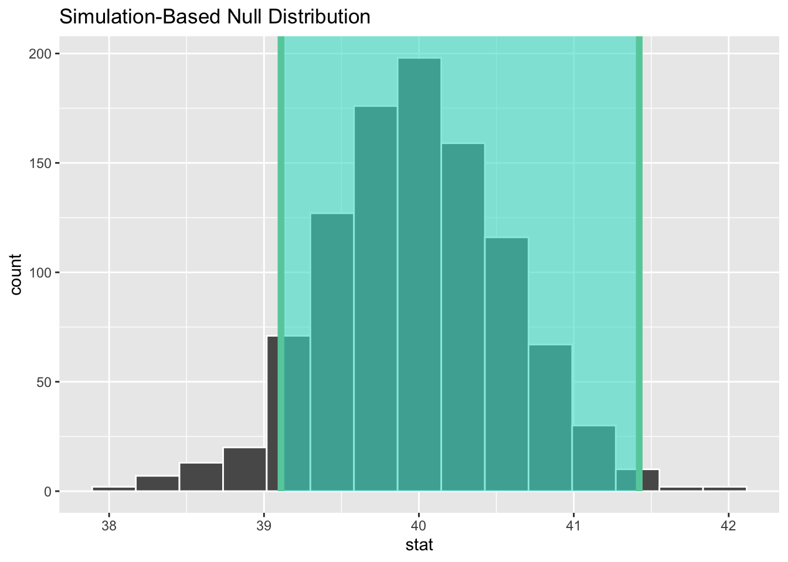
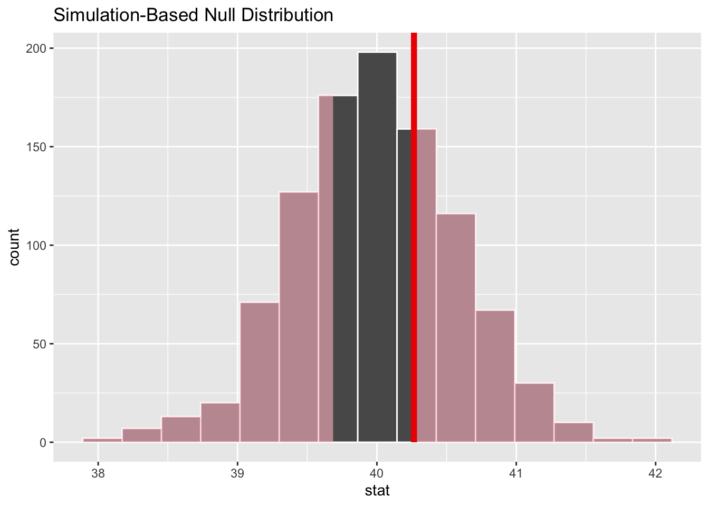

Jak to zostało wspomniane w poprzednim rozdziale modele inferencyjne służą do wyciągania wniosków na podstawie modelu. W większości przypadków dotyczy to przedziałów ufności pewnych charakterystyk, czy weryfikacji hipotez. Pod pojęciem modeli inferencyjnych będziemy rozumieli wszelkie modele stosowane w procedurze wnioskowania.
W tym rozdziale zostanie przedstawiona procedura weryfikacyjna mająca na celu ocenę jakości przedstawionych rozwiązań w klasycznym podejściu do przedziałów ufności i weryfikacji hipotez. Największa trudnością w szacowaniu parametrów rozkładu za pomocą przedziałów ufności oraz w weryfikacji hipotez jest konieczność spełnienia założeń stosowalności tych metod. Bardzo często badacz nie posiada wystarczającej wiedzy o konsekwencji naruszenia tych założeń, a czasem nawet o ich istnieniu. Nawet wówczas, gdy badacz jest świadom konieczności spełnienia założeń w estymacji przedziałowej i weryfikacji hipotez, wymagania te mogą się okazać trudne do wypełnienia. W wielu przypadkach podczas weryfikacji hipotez za pomocą testu t-Studenta, weryfikując hipotezę o normalności rozkładu badanej cechy pojawiają się pewne wątpliwości. Po pierwsze, czy wybrany test mogę stosować do weryfikacji hipotezy o normalności w przypadku tak mało licznej próby lub tak licznej próby. Wiemy bowiem, że często stosowany test Shapiro-Wilka do weryfikacji hipotezy o zgodności populacji z rozkładem normalnym, może zbyt często odrzucać hipotezę o zgodności z rozkładem jeśli test jest wykonywany na dużej próbie1. Z drugiej strony dla prób o małej liczności test w większości nie odrzuca hipotezy o normalności, a to dlatego, że nie sposób jej odrzucić np. na podstawie 5 obserwacji. Podniesiony problem normalności rozkładu badanej cechy nie jest jedynym z jakim badacz może się spotkać chcąc spełnić wszystkie założenia modelu2 . Założenia o równości wariancji badanej cechy pomiędzy grupami, czy brak nadmiarowości3, to kolejne przykłady problemów z jakimi może spotkać się badac z.
1 moc tego testu rośnie bardzo szybko wraz ze wzrostem liczebności próby
2 mam na myśli zarówno modele przedziałów ufności, jaki i modele statystyczne do testowania hipotez
3 w przypadku badania efektu za pomocą modelu liniowego
Konieczność spełnienia wymienionych w stosowanej metodzie wnioskowania założeń jest wymagana, ponieważ w przeciwnym przypadku nie możemy być pewni czy wyniki zastosowanej metody są trafne4. Konsekwencją niespełnienia warunków początkowych metody jest to, że nie możemy być pewni czy rozkład statystyki testowej jest taki jak głosi metoda. I choć istnieją prace, które wyraźnie wskazują na odporność pewnych metod statystycznych na niespełnienie założeń, to nie zwalniają nas z weryfikacji tychże, ponieważ w przypadku niektórych z nich nie znamy konsekwencji ich naruszenia.
4 czy wniosek wyciągnięty na podstawie modelu jest właściwy
W przypadku wspomnianych wyżej wątpliwości co do stosowalności poszczególnych metod weryfikacyjnych należy poszukać rozwiązań, które uprawdopodobnią wyniki uzyskane metodami klasycznymi. Powszechnie polecane w takiej sytuacji są rozwiązania opierające się na próbkowaniu (ang. resampling), wśród których najbardziej znane, to bootstrap i metody permutacyjne.
Niezależnie od stawianej hipotezy, badacz zadaje sobie ten sam rodzaj pytania podczas wnioskowania statystycznego: czy efekt/różnica w obserwowanych danych jest rzeczywista, czy wynika z przypadku? Aby odpowiedzieć na to pytanie, analityk zakłada, że efekt w obserwowanych danych był spowodowany przypadkiem i nazywa to założenie hipotezą zerową5. Analityk następnie oblicza statystykę testową z danych, która opisuje obserwowany efekt. Może użyć tej statystyki testowej do obliczenia wartości \(p\) poprzez zestawienie jej z rozkładem wynikającym z hipotezy zerowej. Jeśli to prawdopodobieństwo jest poniżej jakiegoś wcześniej zdefiniowanego poziomu istotności \(\alpha\), to analityk powinien odrzucić hipotezę zerową.
5 W rzeczywistości, może nie wierzyć, że hipoteza zerowa jest prawdziwa - hipoteza zerowa jest w opozycji do hipotezy alternatywnej, która zakłada, że efekt obecny w obserwowanych danych jest rzeczywiście spowodowany faktem, że “coś się dzieje”
Poniżej przedstawione zostaną przykłady zastosowania obu metod we wnioskowaniu. Można te zadania realizować na różne sposoby, my natomiast wykorzystamy bibliotekę infer(Couch i in. 2021) ekosystemu tidymodels(Kuhn i Wickham 2020).
Przykład 3.1 W tym przykładzie przetestujemy hipotezę o równości średniej z wartością teoretyczną. Dane weźmiemy ze zbioru gss biblioteki infer zawierającego podzbiór wyników spisu powszechnego przeprowadzonego w 1972 r. w USA.
Można mieć pewne wątpliwości co do normalności rozkładu, ponieważ zarysowuje się delikatna asymetria prawostronna. Nie będziemy jednak weryfikować hipotezy o normalności, tylko przeprowadzimy klasyczny test, nie mając pewności czy może on być stosowany w tej sytuacji.
One Sample t-test
data: gss$age
t = 0.44656, df = 499, p-value = 0.6554
alternative hypothesis: true mean is not equal to 40
95 percent confidence interval:
39.09567 41.43633
sample estimates:
mean of x
40.266
Wynik testu nie daje podstaw do odrzucenia hipotezy o tym, że przeciętny wiek w badanej populacji wynosi 40 lat. Przeprowadzimy teraz wnioskowanie w oparciu o techniki bootstrap i permutacyjną.
Kod
null_mean<-gss|>specify(response =age)|># określenie zmiennejhypothesise(null ="point", mu =40)|># ustalienie hipotezygenerate(1000, type ="bootstrap")|># generujemy danecalculate(stat ="mean")null_mean
Response: age (numeric)
# A tibble: 1 × 1
stat
<dbl>
1 40.3
Teraz możemy przyjrzeć się rozkładowi średnich w próbach bootstrapowych.
Kod
ci<-null_mean|>get_confidence_interval(point_estimate =sample_mean, level =.95, type ="se")null_mean|>visualise()+shade_ci(endpoints =ci)

Rysunek 3.2: Histogram średnich bootstrapowych wraz z 95% przedziałem ufności dla średniej
Koncentracja wokół wartości 40 może przemawiać za przyjęciem hipotezy \(H_0\). Ponadto wygląda na to, że otrzymany przedział ufności zawiera teoretyczną średnią wieku 40, co jest kolejny argumentem za przyjęciem hipotezy zerowej. Na koniec wyliczymy \(p\) dla testu bootstrapowego. Wyliczanie \(p\) dla testu bootstrapowego odbywa się wg następujących kroków:
Wyznaczamy na podstawie próby statystykę interesującą nas w teście (w naszym przypadku średnią \(\bar{x}\)).
Następnie przesuwamy wszystkie obserwację o różnicę pomiędzy średnią teoretyczną a \(\bar{x}\), tak aby rozkład miał średnią teoretyczną.
Losujemy próby bootstrapowe z nowej (przesuniętej) próby.
Na podstawie prób bootstrapowych wyznaczamy rozkład średnich poszczególnych prób.
Na koniec sprawdzamy prawdopodobieństwo (szacując na podstawie rozkładu bootstrapowego) otrzymania wartości większych niż średnia oryginalnej próby. Dla hipotez dwustronnych dodajemy do tego prawdopodobieństwo otrzymania wartości mniejszej niż \(-\bar{x}\) (patrz Rys. -Rysunek 3.3)
Kod
null_mean|>get_p_value(obs_stat =sample_mean, direction ="two.sided")
# A tibble: 1 × 1
p_value
<dbl>
1 0.678
Wartość otrzymana z testu bootstrapowego różni się tylko nieznacznie od otrzymanej testem klasycznym.
Kod
null_mean|>visualise()+shade_p_value(obs_stat =sample_mean, direction ="two-sided")

Rysunek 3.3: Histogram średnich bootstrapowych z zacienonym obszarem ilustrującym na ile ekstremalna jest średnia naszej próby w stosunku do średniej wynikającej z hipotezy zerowej
Wskazówka
W przypadku weryfikacji hipotez dotyczących jednej zmiennej wyniki testu bootstrapowego i permutacyjnego są identyczne, ponieważ te dwa rodzaje próbkowania są w tym przypadku identyczne.
Przykład 3.2 Tym razem przetestujemy nico bardziej ambitną hipotezę. Będzie to hipoteza o równości median. Dane zostaną wygenerowane z rozkładów asymetrycznych, a w tych przypadkach porównywanie median ma więcej sensu niż średnich.
Kod
set.seed(44)x1<-rchisq(20, 2)x2<--rchisq(15, 2)+10dt<-tibble(x =c(x1,x2))|>mutate(gr =rep(c("A", "B"), times =c(20,15)))dt|>ggplot(aes(x, fill =gr))+geom_density(alpha =0.6)+xlim(c(-2, 12))+scale_fill_nord(palette ="victory_bonds")+theme_minimal()
Rysunek 3.4: Porównanie rozkładów obu prób
Jak widać na Rysunek 3.4 rozkłady różnią się zarówno położeniem, jak i kształtem. Ponieważ różnią się kształtem to porównanie obu rozkładów testem Manna-Whitneya nie odpowie nam na pytanie o równość median6, a jedynie o tym, że z prawdopodobieństwem 50% losowa wartość z jednego rozkładu będzie większa niż losowa wartość z drugiego rozkładu. Zatem wyniki testu klasycznego nie będą wystarczające do oceny postawionej hipotezy. Przeprowadzimy zatem test metodami próbkowania. Najpierw techniką bootstrapową.
6 tylko w przypadku jednakowych kształtów rozkładów test ten weryfikuje równość median
Kod
set.seed(44)sample_diff<-dt|>specify(x~gr)|>calculate(stat ="diff in medians", order =c("A","B"))sample_diff
Response: x (numeric)
Explanatory: gr (factor)
# A tibble: 1 × 1
stat
<dbl>
1 -6.83
Kod
null_diff<-dt|>specify(x~gr)|>hypothesise(null ="independence")|>generate(reps =1000, type ="bootstrap")|>calculate(stat ="diff in medians", order =c("A","B"))
Oceńmy rozkład różnic z prób bootstrapowych. Jeśli hipoteza zerowa jest prawdziwa to rozkład różnicy median powinien oscylować wokół zera.
Kod
ci<-null_diff|>get_confidence_interval(level =.95, type ="percentile")null_diff|>visualise()+shade_ci(endpoints =ci)+geom_vline(xintercept =0, linewidth =2, color ="red")
Rysunek 3.5: Rozkład różnic pomiędzy medianami z 95% przedziałem ufności
Widać wyraźnie, że rozkład różnic pomiędzy medianami nie oscyluje wokół zera, co może świadczyć o konieczności odrzucenia hipotezy zerowej.
Kod
null_diff|>get_p_value(obs_stat =0, direction ="two-sided")
Wilcoxon rank sum exact test
data: x1 and x2
W = 32, p-value = 2.453e-05
alternative hypothesis: true location shift is not equal to 0
Wartość \(p\) mniejsza od \(\alpha\) każe odrzucić hipotezę zerową na korzyść alternatywnej, czyli mediany nie są równe.
Teraz przeprowadzimy test permutacyjny.
Kod
set.seed(44)null_diff<-dt|>specify(x~gr)|>hypothesise(null ="independence")|>generate(reps =1000, type ="permute")|>calculate(stat ="diff in medians", order =c("A","B"))ci<-null_diff|>get_ci(level =.95, type ="percentile")null_diff|>visualise()+shade_ci(endpoints =ci)+geom_vline(xintercept =sample_diff$stat, linewidth =2, color ="red")
Rysunek 3.6: Rozkład różnic pomiędzy medianami z 95% przedziałem ufności
Jak widać z Rysunek 3.6 rozkład różnic pomiędzy medianami dla całkowicie losowego układu obserwacji7 oscyluje wokół zera. Wartość różnicy median obliczona na podstawie próby -6.83 nie leży wewnątrz przedziału ufności dla różnicy, należy zatem odrzucić hipotezę o równości median. Potwierdza to wynik testu permutacyjnego.
7 co odzwierciedla warunek z hipotezy zerowej
Kod
null_diff|>visualise()+shade_p_value(obs_stat =sample_diff, direction ="two-sided")null_diff|>get_p_value(obs_stat =sample_diff, direction ="two-sided")
# A tibble: 1 × 1
p_value
<dbl>
1 0
Rysunek 3.7: Rozkład różnic pomiędzy medianami z naniesionym p-value
Przykład 3.3 W tym przykładzie zbadamy niezależność cech partyid i class ze zbioru gss, które oznaczają odpowiednio sprzyjanie danej partii politycznej i subiektywną identyfikację klasy społeczno-ekonomicznej.
Kod
library(ggstatsplot)ggbarstats(data =gss, x =class, y =partyid, label ="count", proportion.test =F, bf.message =F)
Rysunek 3.8: Wykres słupkowy ilustrujący udziały poszczególnych grup wraz z wynikiem testu \(\chi^2\) niezależności
Powyższy test każe odrzucić hipotezę o niezależności cech, a ponieważ nie wymaga on spełnienia założeń (poza niezależnością obserwacji w próbie), to można uznać wynik ten za wiarygodny. Jedyny czynnik jaki mógłby wpłynąć na wynik testu \(\chi^2\) to liczebności w tabeli kontyngencji poniżej 5. Dlatego tym bardziej warto przeprowadzić testowanie tej hipotezy za pomocą próbkowania.
Kod
set.seed(44)# obliczamy statystykę testową dla próbysample_stat<-gss|>drop_na(partyid, class)|>droplevels()|>specify(partyid~class)|>hypothesise(null ="independence")|>calculate(stat ="Chisq")# generujemy próby zgodne z hipotezą zerową za pomocą próbkowanianull_chisq_sim<-gss|>drop_na(partyid, class)|>droplevels()|>specify(formula =partyid~class)|>hypothesise(null ="independence")|>generate(1000, type ="permute")|>calculate(stat ="Chisq")# porównujemy rozkład wynikający z hipotezy zerowej z# z wartością statystyki obliczoną z próbynull_chisq_sim|>visualise()+shade_p_value(obs_stat =sample_stat, direction ="right")# obliczamy p-valuenull_chisq_sim|>get_p_value(obs_stat =sample_stat, direction ="right")
# A tibble: 1 × 1
p_value
<dbl>
1 0.002
Rysunek 3.9: Porównanie rozkładu statystyki testowej przy założeniu prawdziwości hipotezy zerowej z wartością statystyki testowej z próby
Widzimy, że test każe odrzucić hipotezę o niezależności cech, podobnie jak test teoretyczny. Pakiet infer daje nam możliwość generowania rozkładu teoretycznego zgodnego z hipotezą zerową nieco inaczej niż na podstawie resamplingu.
Rysunek 3.10: Porównanie rozkładu teoretycznego statystyki testowej przy założeniu prawdziwości hipotezy zerowej z wartością statystyki testowej z próby
Oczywiście wynik otrzymany metodą teoretyczną pokrywa się dokładnie z wynikiem klasycznego testu \(\chi^2\).
Couch, Simon P., Andrew P. Bray, Chester Ismay, Evgeni Chasnovski, Benjamin S. Baumer, i Mine Çetinkaya-Rundel. 2021. „infer: An R package for tidyverse-friendly statistical inference” 6: 3661. https://doi.org/10.21105/joss.03661.
Kuhn, Max, i Hadley Wickham. 2020. „Tidymodels: a collection of packages for modeling and machine learning using tidyverse principles.”https://www.tidymodels.org.